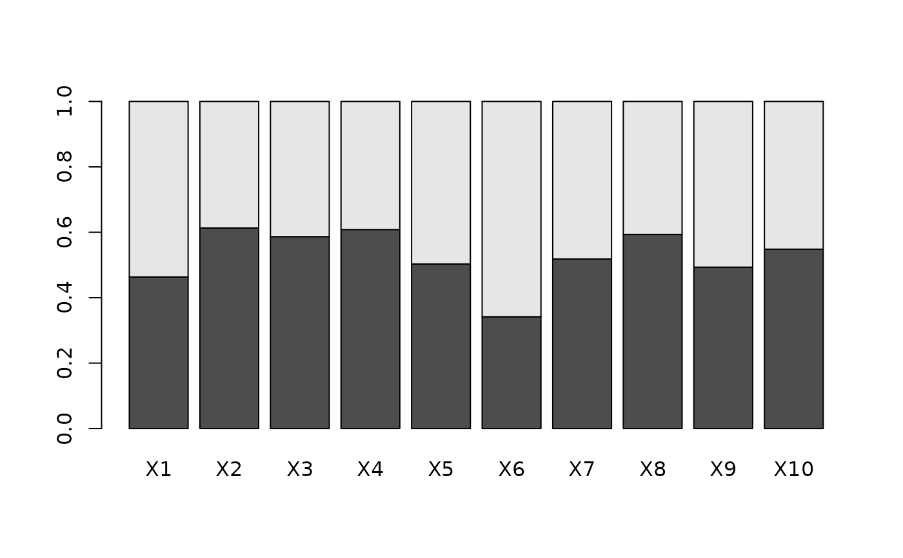

Calculates allele frequency of the first and second allele for each loci A very simple function to report allele frequencies
Source:R/gl.alf.r
gl.alf.RdCalculates allele frequency of the first and second allele for each loci A very simple function to report allele frequencies
Author
Bernd Gruber (bugs? Post to https://groups.google.com/d/forum/dartr)
Examples
#for the first 10 loci only
gl.alf(possums.gl[,1:10])
#> alf1 alf2
#> X1 0.4633333 0.5366667
#> X2 0.6133333 0.3866667
#> X3 0.5866667 0.4133333
#> X4 0.6083333 0.3916667
#> X5 0.5033333 0.4966667
#> X6 0.3416667 0.6583333
#> X7 0.5183333 0.4816667
#> X8 0.5933333 0.4066667
#> X9 0.4933333 0.5066667
#> X10 0.5483333 0.4516667
barplot(t(as.matrix(gl.alf(possums.gl[,1:10]))))
